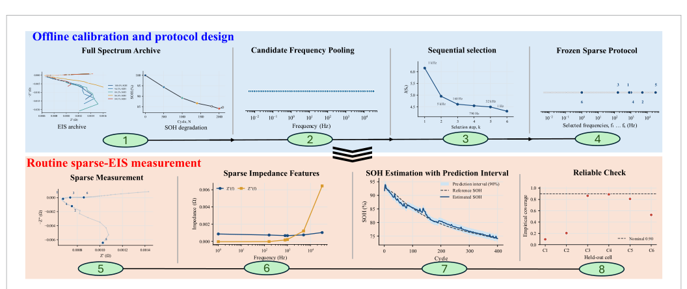

Uncertainty-Aware Offline-Calibrated Sequential Sparse-Frequency Electrochemical Impedance Spectroscopy for Lithium-Ion Battery Health Estimation
Measurement Science and Technology · 2026
First / corresponding author · Volume 37, Number 41 · Published 16 Oct 2026
Publication